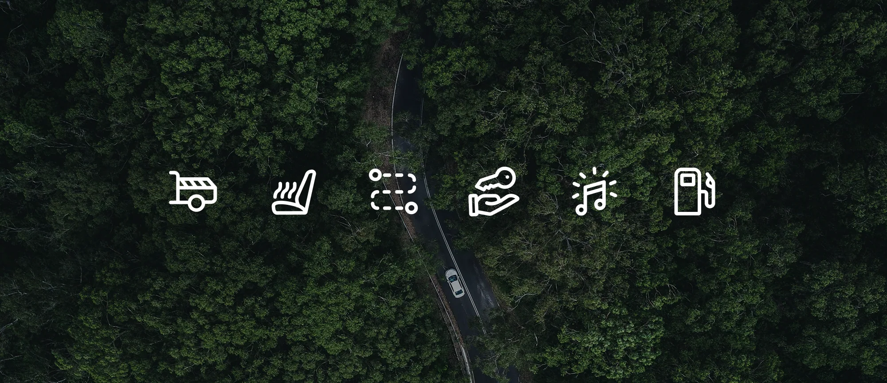
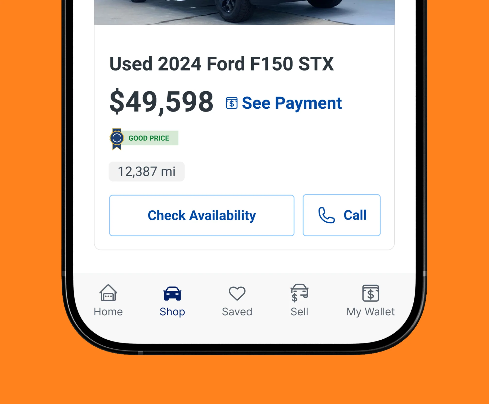
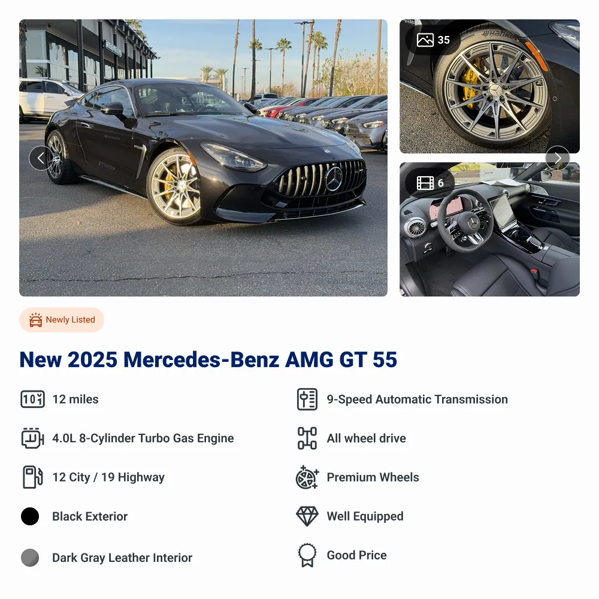
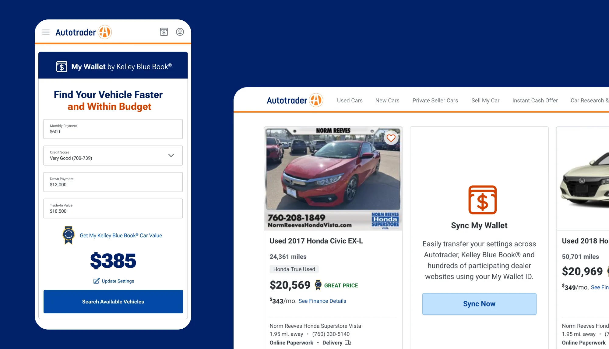
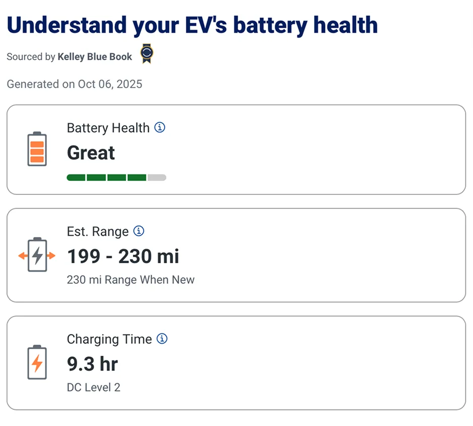

Autotrader
Iconography

Autotrader was missing a consistent icon style across the product. I pitched a unified iconography system, got buy-in, and built out a spot icon library and a functional/UI icon library for use across the AT website and mobile apps.
Functional Icons
I started with Heroicons as a base for the Autotrader functional icon library. The set had a good mix of legibility and visual distinction, and it already covered a lot of the core UI needs — think chevrons for accordion arrows, a gear for settings, or an X for closing a modal. From there I designed the remaining 40+ icons our library needed that weren't in the Heroicons set.
I reverse engineered an icon grid based on the overall style of the set. The grid keeps every icon optically balanced and aligned — a 1px grid with a 1.5px trim area. Orthogonals sit at 90°, 45°, and 15°. Keyshapes round it out, representing the four most common overall shapes in the set that most icons fall under.



Spot Icons
A distinct duotone style mix filled orange shapes with gray strokes, rounded terminals, and generous negative space.
